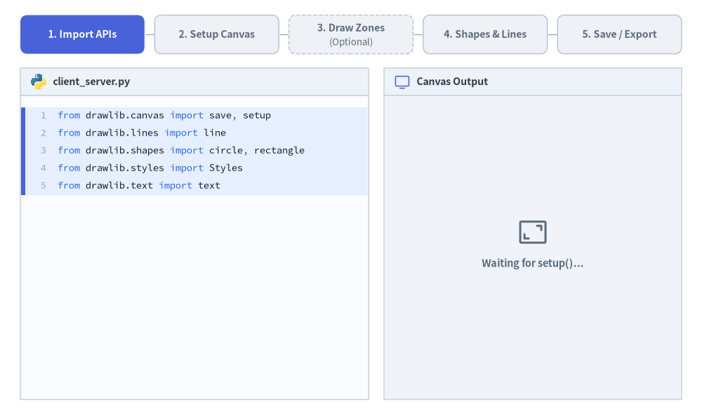
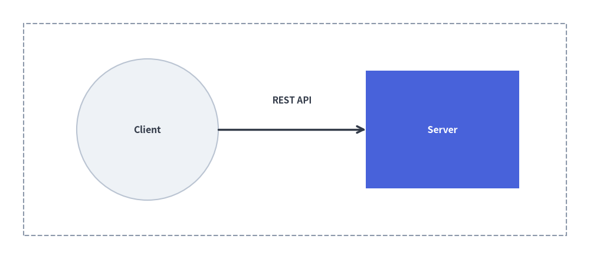

クイックスタートガイド
Drawlib を使えば、スタンドアロンの Python スクリプト（.py）としても、Markdown 埋め込みブロック（```drawlib）としても、直感的かつ再現性の高い高品質な技術図版を作成できます。すべての図解は一貫した 5 ステップのライフサイクル に従います。

Source Code
from __future__ import annotations
from drawlib.anim import Animation
from drawlib.canvas import save, setup
from drawlib.icons import code as code_icons
from drawlib.icons import phosphor
from drawlib.lines import line
from drawlib.shapes import circle, rectangle
from drawlib.smartarts import SourceCode, SourceCodeStyles
from drawlib.styles import Styles
from drawlib.text import text
W, H = 138.0, 82.0
setup(width=W, height=H)
anim = Animation(fps=10.0, loop=0)
# Typography & container styles
CODE_TEXT_SIZE = 10.0
PT_TO_CANVAS = W / 720.0
FONT_CANVAS = CODE_TEXT_SIZE * PT_TO_CANVAS
LINE_H = FONT_CANVAS * 1.8
PAD_Y = FONT_CANVAS * 1.2
CODE_STYLES = SourceCodeStyles.get("default", font_lang="en", text_size=CODE_TEXT_SIZE).patch(
box_style=Styles.Neutral.patch(shape_fill_color=(0, 0, 0, 0), shape_line_width=0),
)
PANE_HEADER = Styles.Neutral.patch(
shape_fill_color=(238, 243, 250),
shape_line_color=(203, 213, 225),
shape_line_width=1.2,
shape_r=0.0,
)
EDITOR_BODY = Styles.Neutral.patch(
shape_fill_color=(250, 252, 255),
shape_line_color=(203, 213, 225),
shape_line_width=1.2,
shape_r=0.0,
)
STUDIO_BODY = Styles.Neutral.patch(
shape_fill_color=(240, 244, 250),
shape_line_color=(203, 213, 225),
shape_line_width=1.2,
shape_r=0.0,
)
CODE_CHUNKS = [
# Step 1 (lines 0..4)
[
"from drawlib.canvas import save, setup",
"from drawlib.lines import line",
"from drawlib.shapes import circle, rectangle",
"from drawlib.styles import Styles",
"from drawlib.text import text",
],
# Step 2 (line 5)
[
"setup(width=100, height=44)",
],
# Step 3 (lines 6..7) - Optional
[
"# Optional: boundary zone",
"rectangle((50, 22), 92, 36, style=Styles.MutedDashed)",
],
# Step 4 (lines 8..14)
[
"circle((25, 22), 12,",
' style=Styles.Neutral, text="Client")',
"rectangle((75, 22), 26, 20,",
' style=Styles.PrimaryFlat, text="Server")',
"line((37, 22), (62, 22),",
' arrow_head="->", style=Styles.DarkBold)',
'text((49.5, 27), "REST API", style=Styles.DarkBold)',
],
# Step 5 (line 15)
[
"save()",
],
]
STEP_TITLES = [
("1. Import APIs", ""),
("2. Setup Canvas", ""),
("3. Draw Zones", "(Optional)"),
("4. Shapes & Lines", ""),
("5. Save / Export", ""),
]
def draw_step_bar(active_step: int) -> None:
"""Draw top 5-step progress indicator bar (active_step is 1..5)."""
pill_w = 24.4
gap = 2.0
start_x = 4.0 + pill_w / 2.0
cy = 75.2
pill_h = 7.6
for idx, (label, sublabel) in enumerate(STEP_TITLES, start=1):
cx = start_x + (idx - 1) * (pill_w + gap)
is_optional = bool(sublabel)
if idx > 1:
prev_cx = cx - (pill_w + gap)
line(
(prev_cx + pill_w / 2.0 + 0.2, cy),
(cx - pill_w / 2.0 - 0.2, cy),
style=Styles.PrimaryBold if idx <= active_step else Styles.MutedThin,
)
if idx == active_step:
st = Styles.PrimaryFlat.patch(shape_r=1.4)
tst = Styles.WhiteBold.patch(text_size=10.2)
sub_tst = Styles.White.patch(text_size=9.5)
elif idx < active_step:
st = Styles.PrimaryNeutral.patch(
shape_r=1.4,
shape_line_width=1.1,
shape_line_style="dashed" if is_optional else "solid",
)
tst = Styles.PrimaryBold.patch(text_size=10.2)
sub_tst = Styles.Primary.patch(text_size=9.5)
else:
st = Styles.Neutral.patch(
shape_r=1.4,
shape_line_width=1.1,
shape_line_style="dashed" if is_optional else "solid",
)
tst = Styles.MutedBold.patch(text_size=10.2)
sub_tst = Styles.Muted.patch(text_size=9.5)
if is_optional:
rectangle((cx, cy), width=pill_w, height=pill_h, style=st)
text((cx, cy + 1.35), label, style=tst)
text((cx, cy - 1.55), sublabel, style=sub_tst)
else:
rectangle((cx, cy), width=pill_w, height=pill_h, style=st, text=label, text_style=tst)
def draw_code_pane(active_step: int, *, sub_step_4_only_shapes: bool = False) -> None:
"""Draw left Python editor pane with active-step highlight and syntax highlighting."""
x0, w = 4.0, 68.5
cx = x0 + w / 2.0
top_y = 63.2
body_h = 59.8
header_h = 5.4
# Header bar (y = 63.2 .. 68.6)
rectangle((cx, top_y + header_h / 2.0), width=w, height=header_h, style=PANE_HEADER)
code_icons.python((x0 + 3.6, top_y + header_h / 2.0), width=3.4, style=Styles.Neutral)
text(
(x0 + 6.4, top_y + header_h / 2.0),
"client_server.py",
style=Styles.DarkBold.patch(text_size=10.2, halign="left"),
)
# Fixed-height editor body (y = 3.4 .. 63.2)
rectangle((cx, top_y - body_h / 2.0), width=w, height=body_h, style=EDITOR_BODY)
# Assemble visible lines up to active_step
lines_so_far: list[str] = []
active_start = 0
for s_idx in range(active_step):
chunk = CODE_CHUNKS[s_idx]
if s_idx == 3 and sub_step_4_only_shapes:
chunk = chunk[:4]
if s_idx == active_step - 1:
active_start = len(lines_so_far)
if s_idx == 3 and not sub_step_4_only_shapes:
active_start += 4
lines_so_far.extend(chunk)
active_end = len(lines_so_far) - 1
# Highlight band behind newly added lines
hl_top = top_y - PAD_Y - active_start * LINE_H
hl_bot = top_y - PAD_Y - (active_end + 1) * LINE_H
hl_cy = (hl_top + hl_bot) / 2.0
hl_h = hl_top - hl_bot
rectangle(
(cx, hl_cy),
width=w - 0.6,
height=hl_h,
style=Styles.Neutral.patch(shape_fill_color=(229, 239, 255), shape_line_width=0),
)
rectangle(
(x0 + 0.55, hl_cy),
width=0.9,
height=hl_h,
style=Styles.PrimaryFlat.patch(shape_line_width=0),
)
SourceCode.draw(
xy=(x0, top_y),
width=w,
code="\n".join(lines_so_far),
styles=CODE_STYLES,
code_lang="python",
show_linenum=True,
align="top_left",
)
def draw_preview_pane(active_step: int, *, sub_step_4_only_shapes: bool = False) -> None:
"""Draw right live canvas preview pane across Steps 1..5."""
x0, w = 75.5, 58.5
cx = x0 + w / 2.0
top_y = 63.2
body_h = 59.8
header_h = 5.4
# Header bar
rectangle((cx, top_y + header_h / 2.0), width=w, height=header_h, style=PANE_HEADER)
phosphor.monitor((x0 + 3.6, top_y + header_h / 2.0), width=3.4, style=Styles.Primary)
text(
(x0 + 6.4, top_y + header_h / 2.0),
"Canvas Output",
style=Styles.DarkBold.patch(text_size=10.2, halign="left"),
)
# Studio grey workspace
body_cy = top_y - body_h / 2.0
rectangle((cx, body_cy), width=w, height=body_h, style=STUDIO_BODY)
if active_step == 1:
# Before setup(): no canvas exists yet
phosphor.frame_corners((cx, body_cy + 3.0), width=6.5, style=Styles.Muted)
text(
(cx, body_cy - 3.2),
"Waiting for setup()...",
style=Styles.MutedBold.patch(text_size=10.5),
)
return
# Miniature 100 x 44 canvas mapped to 51.0 x 22.44 (scale = 0.51)
scale = 0.51
can_w = 100.0 * scale
can_h = 44.0 * scale
can_cx, can_cy = cx, body_cy + 4.2
can_x0 = can_cx - can_w / 2.0
can_y0 = can_cy - can_h / 2.0
# Step 2+: Blank white canvas sheet
rectangle(
(can_cx, can_cy),
width=can_w,
height=can_h,
style=Styles.Neutral.patch(
shape_fill_color=(255, 255, 255),
shape_line_color=(148, 163, 184),
shape_line_width=1.3,
),
)
if active_step < 5:
text(
(can_cx, can_y0 - 3.6),
"Canvas (100 × 44)",
style=Styles.MutedBold.patch(text_size=10.0),
)
# Step 3+: Boundary dashed container (Optional)
if active_step >= 3:
rectangle(
(can_x0 + 50.0 * scale, can_y0 + 22.0 * scale),
width=92.0 * scale,
height=36.0 * scale,
style=Styles.MutedDashed.patch(shape_line_width=1.2),
)
# Step 4+: Entities, Connector & Label
if active_step >= 4:
circle(
(can_x0 + 25.0 * scale, can_y0 + 22.0 * scale),
radius=12.0 * scale,
style=Styles.Neutral,
text="Client",
text_style=Styles.DarkBold.patch(text_size=10.2),
)
rectangle(
(can_x0 + 75.0 * scale, can_y0 + 22.0 * scale),
width=26.0 * scale,
height=20.0 * scale,
style=Styles.PrimaryFlat,
text="Server",
text_style=Styles.WhiteBold.patch(text_size=10.2),
)
if not sub_step_4_only_shapes:
line(
(can_x0 + 37.0 * scale, can_y0 + 22.0 * scale),
(can_x0 + 62.0 * scale, can_y0 + 22.0 * scale),
arrow_head="->",
style=Styles.DarkBold.patch(line_width=1.4),
)
text(
(can_x0 + 49.5 * scale, can_y0 + 28.5 * scale),
"REST API",
style=Styles.DarkBold.patch(text_size=9.8),
)
# Step 5: Save / Download overlay badge overlapping lower canvas edge
if active_step == 5:
card_w, card_h = 39.5, 11.8
card_cy = can_y0 - 1.2
rectangle(
(can_cx, card_cy),
width=card_w,
height=card_h,
style=Styles.Neutral.patch(
shape_fill_color=(255, 255, 255, 0.97),
shape_line_color=(59, 102, 212),
shape_line_width=1.6,
shape_r=1.8,
),
)
circle(
(can_cx - 13.0, card_cy),
radius=3.5,
style=Styles.PrimaryFlat,
)
phosphor.download_simple((can_cx - 13.0, card_cy), width=4.1, style=Styles.White)
text(
(can_cx - 7.5, card_cy + 1.9),
"client_server.png",
style=Styles.PrimaryBold.patch(text_size=10.8, halign="left"),
)
text(
(can_cx - 7.5, card_cy - 2.1),
"Saved via save()",
style=Styles.Dark.patch(text_size=10.0, halign="left"),
)
def render_step(step: int, *, sub_step_4_only_shapes: bool = False) -> None:
"""Render full split-screen frame for a given step."""
draw_step_bar(step)
draw_code_pane(step, sub_step_4_only_shapes=sub_step_4_only_shapes)
draw_preview_pane(step, sub_step_4_only_shapes=sub_step_4_only_shapes)
with anim.frame(duration=1.15):
render_step(1)
with anim.frame(duration=1.25):
render_step(2)
with anim.frame(duration=1.25):
render_step(3)
with anim.frame(duration=0.95):
render_step(4, sub_step_4_only_shapes=True)
with anim.frame(duration=1.40):
render_step(4, sub_step_4_only_shapes=False)
with anim.frame(duration=2.80):
render_step(5)
save()
- API のインポート: キャンバス管理、描画プリミティブ、スタイルプリセットをインポートします。
- キャンバスのセットアップ:
setup()でキャンバスのサイズ（width、height）を初期化します。 - 構造ゾーンの描画 （任意）: 必要に応じて境界ボックス、クラウドリージョン、グルーピング用コンテナを描画します。
- エンティティとコネクタの描画: セマンティックスタイルとラベルを指定して、図形・アイコン・接続線を配置します。
- 保存・エクスポート:
save()で画像ファイルとして保存するか、ドキュメントビルダにインラインで自動レンダリングさせます。
1. スタンドアロン Python スクリプト（images プロジェクト）
[!IMPORTANT] プロジェクトファースト原則（
drawlib init）:
未初期化のディレクトリに単体の.pyファイルを直接作成するのではなく、styles.py（テーマ・多言語フォント設定）、utils.py、_assets/、build.shが適切に構成されるよう、必ず最初に Drawlib プロジェクトをスキャフォールドしてください。# Scaffold a standalone illustration project (creates images_src/ -> images/) $ uv run drawlib init images
images_src/client_server.py という名前の Python スクリプトを作成します。
from drawlib.canvas import save, setup
from drawlib.lines import line
from drawlib.shapes import circle, rectangle
from drawlib.styles import Styles
from drawlib.text import text
# Step 2: Setup canvas dimensions (Cartesian space: 100 wide x 44 high)
setup(width=100, height=44)
# Step 3 (Optional): Draw background boundary container
rectangle((50, 22), width=92, height=36, style=Styles.MutedDashed)
# Step 4: Draw main entities and connectors (50%+ Neutral-Grounded)
circle((25, 22), radius=12, style=Styles.Neutral, text="Client", text_style=Styles.DarkBold.patch(text_size=11.5))
rectangle((75, 22), width=26, height=20, style=Styles.PrimaryFlat, text="Server", text_style=Styles.WhiteBold.patch(text_size=11.5))
# Connection line with arrowhead
line((37, 22), (62, 22), arrow_head="->", style=Styles.DarkBold)
text((49.5, 27), "REST API", style=Styles.DarkBold.patch(text_size=11.0))
# Step 5: Save image (defaults to client_server.png)
save()
実行とプレビュー
生成されたビルドスクリプトを使って images_src/ 内の全スクリプトを一括ビルドするか、個別のスクリプトを直接実行します。
# Batch-compile all scripts in images_src/ to images/
$ ./images_src/build.sh
# Or run a single script directly with Python
$ uv run python images_src/client_server.py
統合 CLI コマンド drawlib show を使用すると、ヘッドレスでのプレビュー出力や座標グリッドの重ね合わせ確認が行えます。
# Export directly to a specified output file
$ uv run drawlib show images_src/client_server.py -o .drawlib/scratch/output.png
# Overlay a visual coordinate grid (-g) to check element spacing
$ uv run drawlib show images_src/client_server.py -g -o .drawlib/scratch/output_grid.png
2. Markdown ドキュメントへの埋め込み
任意の Markdown ドキュメント（doc や site プロジェクト内の doc.md など）の中に、drawlib で囲んだコードブロックをそのまま埋め込みます。
# Architecture Overview
Here is our primary service flow:
```drawlib align=center file=client_server_communication.png caption="Client-Server REST Communication"
from drawlib.canvas import save, setup
from drawlib.shapes import rectangle, circle
from drawlib.lines import line
from drawlib.text import text
from drawlib.styles import Styles
setup(width=100, height=44)
rectangle((50, 22), width=92, height=36, style=Styles.MutedDashed)
circle((25, 22), radius=12, style=Styles.Neutral, text="Client", text_style=Styles.DarkBold.patch(text_size=11.5))
rectangle((75, 22), width=26, height=20, style=Styles.PrimaryFlat, text="Server", text_style=Styles.WhiteBold.patch(text_size=11.5))
line((37, 22), (62, 22), arrow_head="->", style=Styles.DarkBold)
text((49.5, 27), "REST API", style=Styles.DarkBold.patch(text_size=11.0))
save()
```
サイト全体をビルドする前に、Markdown ファイル内の特定の名前付きブロックに座標グリッドを表示してプレビューできます。
# Preview a specific named diagram block with a coordinate grid (-g)
$ uv run drawlib show doc.md client_server_communication.png -g -o .drawlib/scratch/preview.png
drawlib build html や drawlib build markdown でコンパイルすると、コードブロックが実行されてレンダリング済みの画像に置き換わります。

Source Code
from drawlib.canvas import save, setup
from drawlib.shapes import rectangle, circle
from drawlib.lines import line
from drawlib.text import text
from drawlib.styles import Styles
setup(width=100, height=44)
rectangle((50, 22), width=92, height=36, style=Styles.MutedDashed)
circle((25, 22), radius=12, style=Styles.Neutral, text="Client", text_style=Styles.DarkBold.patch(text_size=11.5))
rectangle((75, 22), width=26, height=20, style=Styles.PrimaryFlat, text="Server", text_style=Styles.WhiteBold.patch(text_size=11.5))
line((37, 22), (62, 22), arrow_head="->", style=Styles.DarkBold)
text((49.5, 27), "REST API", style=Styles.DarkBold.patch(text_size=11.0))
save()
3. スムーズに作図するための重要ルール
setup()は必須: 描画ブロックの冒頭で必ずsetup(width=..., height=...)を呼び出してください。- Markdown ブロック内での
save()の扱い: Markdown の埋め込みブロック内では Drawlib が自動的にキャンバスをキャプチャする（save()の呼び出しは安全に no-op として処理される）ため、save()は省略可能です。ただし、スタンドアロンの.pyスクリプトへそのままコピー＆ペーストして 100% 互換動作させるため、完全なコード例では引数なしのsave()を記述しておくことを推奨します。 - 配色の規律（50% 以上ニュートラル基調の設計）: 虹色のような雑多な色使いは避けてください。ノードの 50% 以上を落ち着いたニュートラルカード（
Styles.Neutral、Styles.PrimaryNeutral、Styles.SecondaryNeutral）で構成し、彩度の高いヒーロースタイル（Styles.PrimaryFlat）は特に注目させたい 1〜2 個の主役要素だけに限定し、コネクタにはStyles.DarkBoldを使用します。